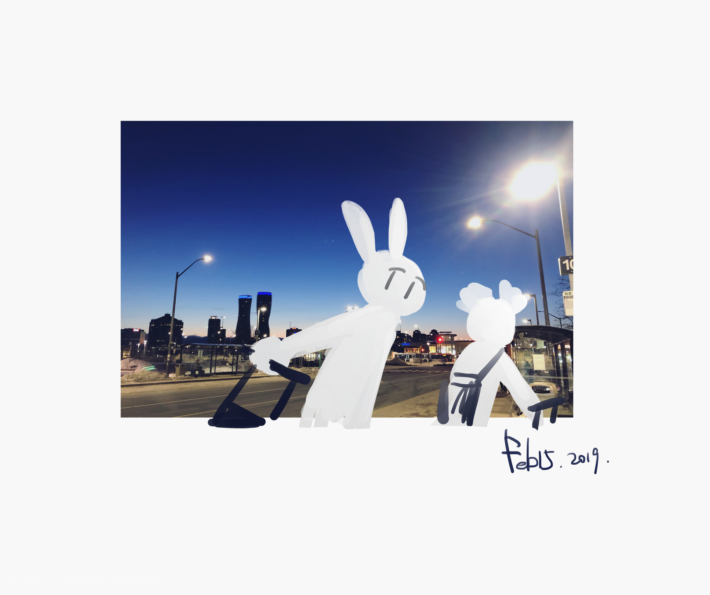
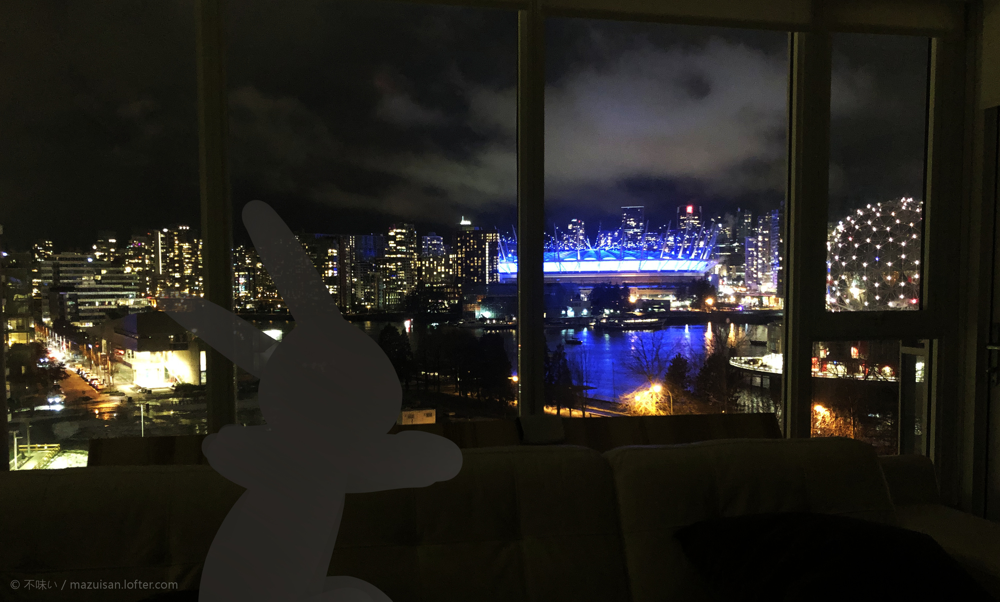
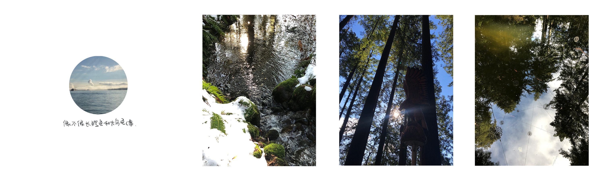
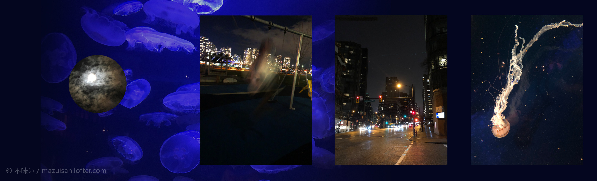
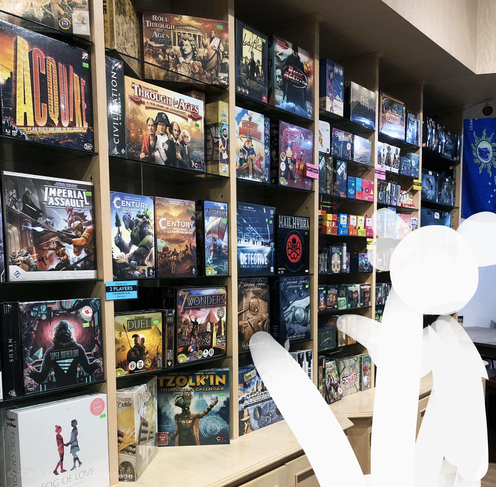
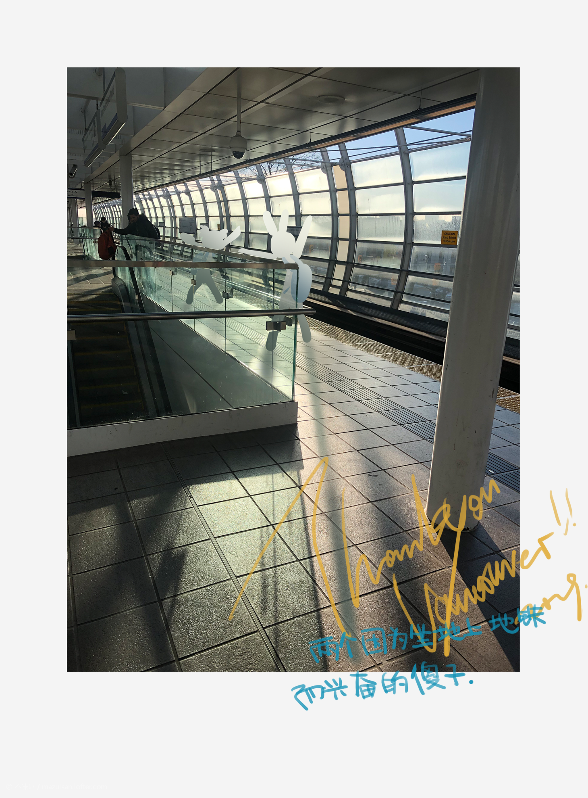

<!DOCTYPE html>


<html lang="en">


<head>
  <meta charset="utf-8" />
    
  <meta name="viewport" content="width=device-width, initial-scale=1, maximum-scale=1" />
  <title>
    春假和室友的旅游 |  
  </title>
  <meta name="generator" content="hexo-theme-ayer">
  
  <link rel="shortcut icon" href="/favicon.ico" />
  
  
<link rel="stylesheet" href="/dist/main.css">

  
<link rel="stylesheet" href="https://cdn.jsdelivr.net/gh/Shen-Yu/cdn/css/remixicon.min.css">

  
<link rel="stylesheet" href="/css/custom.css">

  
  
<script src="https://cdn.jsdelivr.net/npm/pace-js@1.0.2/pace.min.js"></script>

  
  

  

<link rel="alternate" href="/atom.xml" title="null" type="application/atom+xml">
</head>

</html>

<body>
  <div id="app">
    
      
      <canvas width="1777" height="841"
        style="position: fixed; left: 0px; top: 0px; z-index: 99999; pointer-events: none;"></canvas>
      
    <main class="content on">
      <section class="outer">
  <article
  id="post-P063"
  class="article article-type-post"
  itemscope
  itemprop="blogPost"
  data-scroll-reveal
>
  <div class="article-inner">
    
    <header class="article-header">
       
<h1 class="article-title sea-center" style="border-left:0" itemprop="name">
  春假和室友的旅游
</h1>
 

    </header>
     
    <div class="article-meta">
      <a href="/2019/05/14/P063/" class="article-date">
  <time datetime="2019-05-14T17:22:01.000Z" itemprop="datePublished">2019-05-14</time>
</a> 
  <div class="article-category">
    <a class="article-category-link" href="/categories/%E6%97%A5%E8%AE%B0/">日记</a>
  </div>
  
<div class="word_count">
    <span class="post-time">
        <span class="post-meta-item-icon">
            <i class="ri-quill-pen-line"></i>
            <span class="post-meta-item-text"> Word count:</span>
            <span class="post-count">1.8k</span>
        </span>
    </span>

    <span class="post-time">
        &nbsp; | &nbsp;
        <span class="post-meta-item-icon">
            <i class="ri-book-open-line"></i>
            <span class="post-meta-item-text"> Reading time≈</span>
            <span class="post-count">6 min</span>
        </span>
    </span>
</div>
 
    </div>
      


  
    <div class="article-entry" itemprop="articleBody">
       
  <p><a data-fancybox="gallery" href="P063_1.jpeg"></a><br>朋友你见过四点钟的滑铁卢吗.jpg<br><br><br><a data-fancybox="gallery" href="P063_2.jpeg"></a><br>我们租的民宿是湖景房…!!夜晚和白天都各有一般风味.<br><br><br><a data-fancybox="gallery" href="P063_3.jpeg"></a><br>河水里闪闪发光的是硬币,原来往河里投硬币求祝福是全球性的2333.<br><br><br><a data-fancybox="gallery" href="P063_4.jpeg"></a><br>那个自带动态模糊的人是我室友,我们在那个公园呆了很久.第二张是因为想吃炸鸡所以坐公交跑了半个城市(?).两个人边吃炸鸡边追完了梦幻岛的进度,说起来那段时间好久都没看新剧了.<br><br><br><a data-fancybox="gallery" href="P063_5.jpeg"></a><br>看到桌游店,书店都会不思索的进去2333.说起来在唐人街有一家也许是台湾人开的书店,有今日子小姐的现代书(?)和上个世纪甚至有些掉色的菜谱,只是粗略的看看都会很开心w.<br><br><br><a data-fancybox="gallery" href="P063_6.png"></a><br>其实坐地铁最开心的是我???我甚至超享受刷卡的过程,一定是在村里呆太久了().<br>两个养老大学生去温哥华旅游了三天.这篇文章是简单的记录.<br><br><br>温哥华真是个温暖的城市.</p>
<br>
<br>
<br>

<p>起因是圣诞假那天我和我的室友一起坐go bus回家.</p>
<p>友:哪里都好好想出去走走啊.<br>我:我没有美签.<br>友:你怎么可以没有美签.<br>所以定下了在reading week的时候国内走走.</p>
<br>

<p>为了赶便宜的航班,出发的时间定在了清早四点钟.<br>四点和十二点的景色没什么不同,除了坐车到多伦多的时候见到了天渐渐亮起来的过程.<br>我:说起来我们以前最多也就熬夜到四点,没四点起过床呢.<br>友:是呢.<br>(不过编辑这篇文章的时候她经历过了熬夜熬回北京时间的地狱期.大家活着都不容易.)</p>
<br>

<p>定的民宿位置超级酷.小小的两室一厅,在水旁边的十层楼.客厅是两面的玻璃,非常的开阔.下午到达的时候两个人就大喊大叫(….)地在客厅拍照.太累了再沙发上睡到傍晚,起来又是一个世界!<br>所处的地方离chinatown非常近,也是我的胃指引着我去的x.<br>温哥华的地形上下坡很多,楼群错落,唐人街那里也是很有历史的味道.<br>散步到像是小商品市场一样的地方.有什么…春节游行的活动标语.字也是繁简都有.店铺的铁门布局让我一瞬间产生处于上海的错觉.<br>晚上是我选择餐馆,想着既然出来了就选些本地的有趣店面吧.<br>友:我觉得这家店好像是喝酒的.<br>我:……是啊我看到里面的吧台了.<br>友:但是我们是来吃饭的.<br>我:但是我们是来吃饭的(复读).<br>友:所以就尴尬了.</p>
<p>dbq.</p>
<p>但里面的料理味道还是挺特别的.炸鸡翅加上柠檬味的酱汁,牛肉片盖上生拌菜.<br>不过回去的路上还是很没出息的去了麦当劳买了甜筒哈哈哈.</p>
<br>
第二天的目的地是吊桥公园.

<p>温哥华有几个自然的景区非常值得一去.这是其中的一个.<br>我特意挑了sea bus坐过去,吊桥公园在山的地方.以前住的地方都是平路,做车过了站的我们走回入口也是个挺有趣的体验w.<br>原本这个公园是私人的度假屋,是位工程师自己建造的吊桥留了下来.<br>公园非常惬意.公园附近就是居民区,如果能住在旁边再买个year pass那一定是散步的好地方.<br>叫吊桥公园是因为有座一百来米的桥连接了两岸,走上去会摇晃得很厉害,两侧很开阔.查了下百科告诉我离地面有个70来米,能看到河水和峭壁,树丛和小小的旅客们.<br>走过吊桥一眼望去全是绿.公园有布置一些装饰和彩灯在树上,起落的长廊也好似迷宫.苏州的狮子林有给我类似的感觉,不过吊桥公园开阔太多.<br>那天有遇上成群结队的穿着制服的学生(还是小西装校服!suki(不是)).应该是日本来修学旅行的吧.能去海外修学旅行真是羡慕啊.<br>在小煎饼摊子的地方室友悄悄拉着我的袖子.<br>友:我们在这儿等等.<br>我:?<br>友:我想听日本妹子讲英语.<br>我:……<br>我:(我掏出手机在宿舍群里发室友的傻子记录).<br>飞哥:(爆笑)我觉得我明天需要去警局接你们出来.</p>
<br>


<p>之后去了美术馆,科技馆,和水族馆.算是很经典的一些去处.去美术馆时很不巧,过两天有莫奈的展览,还在布展,只能在一楼警戒线外偷偷得看,啊我好难过!!!我的白月光!!!看到保安盯着我看我也不走!!!!(.<br>水族馆倒是非常开心,我从海獭的可爱体验到了大约二十年以来少数的恋爱的荷尔蒙(?).</p>
<br>


<p>我们的旅行计划很散漫,但也不想就这么直接回去.就在路上慢慢的逛,夜晚的温哥华也别有一番风味.<br>走到我们住所旁边有个小的公园,有些娱乐器材.人少,除了我们还有一对父子.室友可喜欢其中的轮胎秋千和有超大滑梯.<br>我真的好多年没荡秋千了,作为座椅的轮胎很大,直接躺上去望着天空,室友在旁边推我.风很惬意,没有滑铁卢的冷,也没有滑铁卢的日日夜夜赶作业的急躁感.<br>公园里面还有一个小坡,抓着绳子坐在连着的小椅子上,从坡上荡下去.那位小男生可以一路荡当底,我这个体重到半路就全靠自己晃动xx.恶魔室友还拍下了视频,这个世界上不能被人见到的黑历史又多了一件(…).<br>我们在公园里呆了很久,父子走了之后有两位情侣或者是夫妻也来荡秋千了.秋千是全民的…!</p>
<br>

<p>顺便一提民宿最后一天男主人回来了,我们见到了面.和客厅里摆放的各式酒类和多种旅游纪念冰箱贴给人的印象相同,是个健康好客爱生活的人.说起来是一个人住,但冰箱里的调味料可是满满当当.我和室友反思了一下,之后在唯二的酱油和老干妈之后终于尝试了咖喱,是历史性的进步了.</p>
<br>

<p>我非常容易忘事,所以会担心出游的时间和金钱放进去却忘得一干二净.但春假回来后人学习还是填坑都意外的有动力,经历所获得了放松和感受还是会留下来的呢.<br><br><br>那么也许下次也还会记录吧.</p>
 
      <!-- reward -->
      
    </div>
    

    <!-- copyright -->
    
    <footer class="article-footer">
       
  <ul class="article-tag-list" itemprop="keywords"><li class="article-tag-list-item"><a class="article-tag-list-link" href="/tags/%E6%9D%82%E8%B0%88/" rel="tag">杂谈</a></li></ul>

    </footer>
  </div>

   
  <nav class="article-nav">
    
      <a href="/2019/06/19/P090/" class="article-nav-link">
        <strong class="article-nav-caption">Prev</strong>
        <div class="article-nav-title">
          
            miku和等待
          
        </div>
      </a>
    
    
      <a href="/2019/05/08/P044/" class="article-nav-link">
        <strong class="article-nav-caption">Next</strong>
        <div class="article-nav-title">藏在过去的护身符</div>
      </a>
    
  </nav>

  
     
</article>

</section>
      <footer class="footer">
  <div class="outer">
    <ul>
      <li>
        Copyrights &copy;
        2015-2020
        <i class="ri-heart-fill heart_icon"></i> Mazui
      </li>
    </ul>
    <ul>
      <li>
        
      </li>
    </ul>
    <ul>
      <li>
        
      </li>
    </ul>
    <ul>
      
    </ul>
    <ul>
      <li>
        <!-- cnzz统计 -->
        
      </li>
    </ul>
  </div>
</footer>
      <div class="float_btns">
        <div class="totop" id="totop">
  <i class="ri-arrow-up-line"></i>
</div>

<div class="todark" id="todark">
  <i class="ri-moon-line"></i>
</div>

      </div>
    </main>
    <aside class="sidebar on">
      <button class="navbar-toggle"></button>
<nav class="navbar">
  
  <div class="logo">
    <a href="/"></a>
  </div>
  
  <ul class="nav nav-main">
    
    <li class="nav-item">
      <a class="nav-item-link" href="/">home</a>
    </li>
    
    <li class="nav-item">
      <a class="nav-item-link" href="/archives">archives</a>
    </li>
    
    <li class="nav-item">
      <a class="nav-item-link" href="/categories">categories</a>
    </li>
    
    <li class="nav-item">
      <a class="nav-item-link" href="/tags">tags</a>
    </li>
    
    <li class="nav-item">
      <a class="nav-item-link" target="_blank" rel="noopener" href="https://www.mihuashi.com/users/mazui">comm</a>
    </li>
    
    <li class="nav-item">
      <a class="nav-item-link" href="/about">about</a>
    </li>
    
  </ul>
</nav>
<nav class="navbar navbar-bottom">
  <ul class="nav">
    <li class="nav-item">
      
      <a class="nav-item-link nav-item-search"  title="Search">
        <i class="ri-search-line"></i>
      </a>
      
      
      <a class="nav-item-link" target="_blank" href="/atom.xml" title="RSS Feed">
        <i class="ri-rss-line"></i>
      </a>
      
    </li>
  </ul>
</nav>
<div class="search-form-wrap">
  <div class="local-search local-search-plugin">
  <input type="search" id="local-search-input" class="local-search-input" placeholder="Search...">
  <div id="local-search-result" class="local-search-result"></div>
</div>
</div>
    </aside>
    <script>
      if (window.matchMedia("(max-width: 768px)").matches) {
        document.querySelector('.content').classList.remove('on');
        document.querySelector('.sidebar').classList.remove('on');
      }
    </script>
    <div id="mask"></div>

<!-- #reward -->
<div id="reward">
  <span class="close"><i class="ri-close-line"></i></span>
  <p class="reward-p"><i class="ri-cup-line"></i>请我喝杯咖啡吧~</p>
  <div class="reward-box">
    
    <div class="reward-item">
      
      <span class="reward-type">支付宝</span>
    </div>
    
    
    <div class="reward-item">
      
      <span class="reward-type">微信</span>
    </div>
    
  </div>
</div>
    
<script src="/js/jquery-2.0.3.min.js"></script>


<script src="/js/lazyload.min.js"></script>

<!-- Tocbot -->


<script src="/js/tocbot.min.js"></script>

<script>
  tocbot.init({
    tocSelector: '.tocbot',
    contentSelector: '.article-entry',
    headingSelector: 'h1, h2, h3, h4, h5, h6',
    hasInnerContainers: true,
    scrollSmooth: true,
    scrollContainer: 'main',
    positionFixedSelector: '.tocbot',
    positionFixedClass: 'is-position-fixed',
    fixedSidebarOffset: 'auto'
  });
</script>

<script src="https://cdn.jsdelivr.net/npm/jquery-modal@0.9.2/jquery.modal.min.js"></script>
<link rel="stylesheet" href="https://cdn.jsdelivr.net/npm/jquery-modal@0.9.2/jquery.modal.min.css">
<script src="https://cdn.jsdelivr.net/npm/justifiedGallery@3.7.0/dist/js/jquery.justifiedGallery.min.js"></script>

<script src="/dist/main.js"></script>

<!-- ImageViewer -->

<!-- Root element of PhotoSwipe. Must have class pswp. -->
<div class="pswp" tabindex="-1" role="dialog" aria-hidden="true">

    <!-- Background of PhotoSwipe. 
         It's a separate element as animating opacity is faster than rgba(). -->
    <div class="pswp__bg"></div>

    <!-- Slides wrapper with overflow:hidden. -->
    <div class="pswp__scroll-wrap">

        <!-- Container that holds slides. 
            PhotoSwipe keeps only 3 of them in the DOM to save memory.
            Don't modify these 3 pswp__item elements, data is added later on. -->
        <div class="pswp__container">
            <div class="pswp__item"></div>
            <div class="pswp__item"></div>
            <div class="pswp__item"></div>
        </div>

        <!-- Default (PhotoSwipeUI_Default) interface on top of sliding area. Can be changed. -->
        <div class="pswp__ui pswp__ui--hidden">

            <div class="pswp__top-bar">

                <!--  Controls are self-explanatory. Order can be changed. -->

                <div class="pswp__counter"></div>

                <button class="pswp__button pswp__button--close" title="Close (Esc)"></button>

                <button class="pswp__button pswp__button--share" style="display:none" title="Share"></button>

                <button class="pswp__button pswp__button--fs" title="Toggle fullscreen"></button>

                <button class="pswp__button pswp__button--zoom" title="Zoom in/out"></button>

                <!-- Preloader demo http://codepen.io/dimsemenov/pen/yyBWoR -->
                <!-- element will get class pswp__preloader--active when preloader is running -->
                <div class="pswp__preloader">
                    <div class="pswp__preloader__icn">
                        <div class="pswp__preloader__cut">
                            <div class="pswp__preloader__donut"></div>
                        </div>
                    </div>
                </div>
            </div>

            <div class="pswp__share-modal pswp__share-modal--hidden pswp__single-tap">
                <div class="pswp__share-tooltip"></div>
            </div>

            <button class="pswp__button pswp__button--arrow--left" title="Previous (arrow left)">
            </button>

            <button class="pswp__button pswp__button--arrow--right" title="Next (arrow right)">
            </button>

            <div class="pswp__caption">
                <div class="pswp__caption__center"></div>
            </div>

        </div>

    </div>

</div>

<link rel="stylesheet" href="https://cdn.jsdelivr.net/npm/photoswipe@4.1.3/dist/photoswipe.min.css">
<link rel="stylesheet" href="https://cdn.jsdelivr.net/npm/photoswipe@4.1.3/dist/default-skin/default-skin.min.css">
<script src="https://cdn.jsdelivr.net/npm/photoswipe@4.1.3/dist/photoswipe.min.js"></script>
<script src="https://cdn.jsdelivr.net/npm/photoswipe@4.1.3/dist/photoswipe-ui-default.min.js"></script>

<script>
    function viewer_init() {
        let pswpElement = document.querySelectorAll('.pswp')[0];
        let $imgArr = document.querySelectorAll(('.article-entry img:not(.reward-img)'))

        $imgArr.forEach(($em, i) => {
            $em.onclick = () => {
                // slider展开状态
                // todo: 这样不好，后面改成状态
                if (document.querySelector('.left-col.show')) return
                let items = []
                $imgArr.forEach(($em2, i2) => {
                    let img = $em2.getAttribute('data-idx', i2)
                    let src = $em2.getAttribute('data-target') || $em2.getAttribute('src')
                    let title = $em2.getAttribute('alt')
                    // 获得原图尺寸
                    const image = new Image()
                    image.src = src
                    items.push({
                        src: src,
                        w: image.width || $em2.width,
                        h: image.height || $em2.height,
                        title: title
                    })
                })
                var gallery = new PhotoSwipe(pswpElement, PhotoSwipeUI_Default, items, {
                    index: parseInt(i)
                });
                gallery.init()
            }
        })
    }
    viewer_init()
</script>

<!-- MathJax -->

<!-- Katex -->

<!-- busuanzi  -->

<!-- ClickLove -->

<!-- ClickBoom1 -->

<!-- ClickBoom2 -->


<script src="/js/clickBoom2.js"></script>


<!-- CodeCopy -->

<!-- CanvasBackground -->


    
  </div>
</body>

</html>